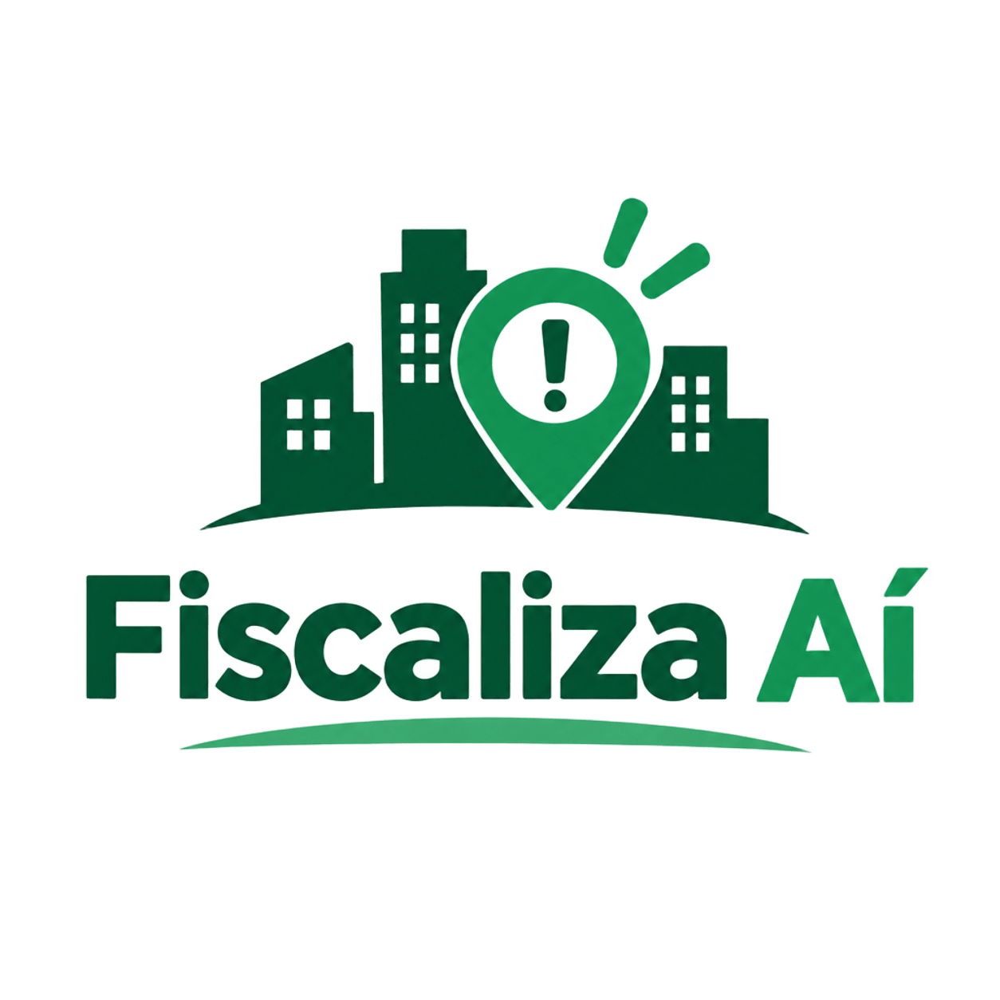

Quem somos O Fiscaliza Aí é um sistema de denúncias urbanas desenvolvido como projeto acadêmico para a disciplina de Desenvolvimento Front-End, envolvendo os cursos de Engenharia de Software e Ciências da Computação. A plataforma permite que os cidadãos registrem problemas urbanos, como buracos nas ruas, falta de iluminação pública, acúmulo de lixo, calçadas danificadas e problemas de saneamento básico. O sistema foi desenvolvido para possibilitar o preenchimento e o envio de denúncias diretamente pelo navegador, sem realizar o armazenamento das informações em um servidor.
Facilitar a participação dos cidadãos na identificação e comunicação de problemas urbanos, utilizando a tecnologia como ferramenta de conscientização, acessibilidade e responsabilidade social, contribuindo para a construção de cidades mais organizadas, seguras e sustentáveis.
Ser reconhecido como uma iniciativa acadêmica inovadora que demonstra o potencial da tecnologia na transformação social, inspirando o desenvolvimento de soluções digitais capazes de aproximar a população das questões urbanas e incentivar uma cidadania mais ativa e participativa.